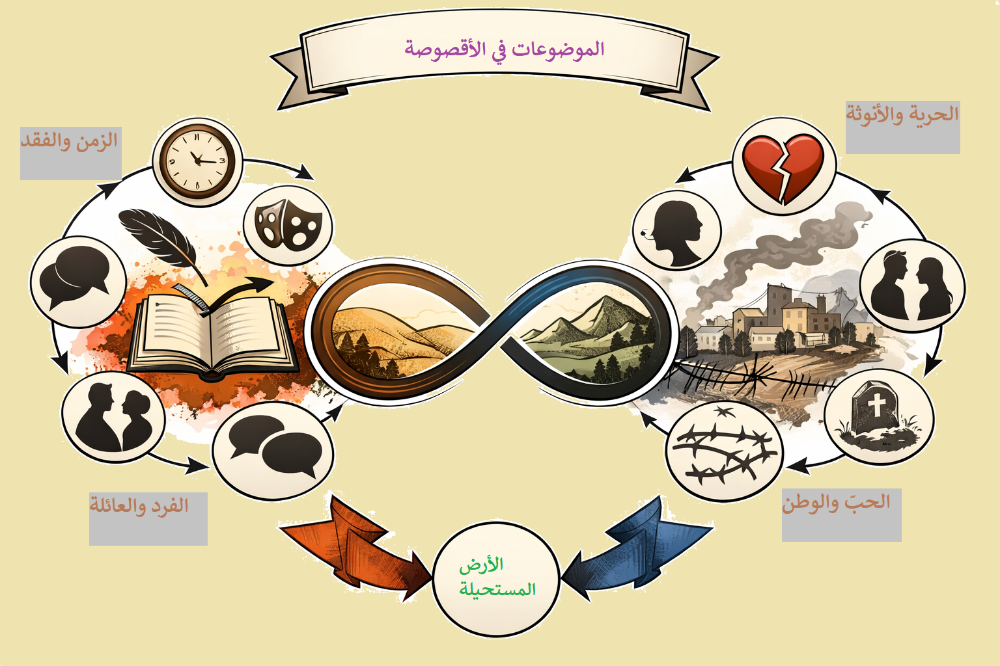

أقصوصة "الأرض المستحيلة" لإيميلي نصر الله
الدرس الثاني: تحليل أقصوصة "الأرض المستحيلة" منشورة في مجلة العربي – جوان 2000
التقديم
تُعدّ أقصوصة "الأرض المستحيلة" للكاتبة اللبنانية إيميلي نصر الله نصاً قصصياً حديثاً يتمتع بطاقة إيحائية مكثفة، يمزج بين تقنيات السرد المعاصرة وهموم الواقع اللبناني والإنساني. تدور الأقصوصة حول لقاء ساردة مع حبيبها القديم "نادر" في بيت عزاء بعد فراق دام ثلاثين عاماً، لتستعيد عبر تقنية الاسترجاع ذكريات الطفولة والحب في قرية "الجورة"، وتتأمل في مصير علاقة اصطدمت بحواجز الطبقة والتقاليد والطموح الفردي والاحتلال.
يجمع النص بين عمق التجربة الوجدانية ودقة التصوير الفني، محولاً قصة حب متعثرة إلى تأمل وجودي في معنى الاستحالة: استحالة الحب في مجتمع طبقي، واستحالة التوفيق بين الأنوثة والطموح، واستحالة العيش بسلام فوق أرض محتلة.
📖 معلومات عن الكاتبة
- الاسم: إيميلي نصر الله
- الميلاد: 1931، بلدة الكفير (حاصبيا)، لبنان
- الدراسة: مدرسة الكفير، الكلية الوطنية بالشويفات، الجامعة الأميركية في بيروت (بكالوريوس في الآداب والتربية)
- المهنة: أديبة وصحافية، عملت في التدريس وكتبت في مجلة "الصياد"
- الوفاة: 2018
- أعمال بارزة: طيور أيلول، شجرة الدفلى، الرَهينة، تلك الذكريات، الإقلاع عكس الزمن، جزيرة الوهم، شادي الصغير.
📚 معلومات عن النص
- العنوان: الأرض المستحيلة
- الكاتبة: إيميلي نصر الله
- الناشر: مجلة العربي – جوان 2000، العدد 499، الصفحات 112-114
- النوع الأدبي: أقصوصة (قصة قصيرة) تنتمي إلى الأدب الواقعي والشاعري معاً.
ملخص الأقصوصة
في مشهد تعزية بوفاة شقيق نادر الأكبر، تلتقي الساردة بعد ثلاثين عاماً من الفراق بحبيبها القديم "نادر". يسترجع اللقاء شريط ذكريات طفولة جمعتهما في "الجورة"، حيث كان فارسها الجريء على حصان القصب، وحيث راقبتهما عين أمه من الشرفة. تحول الإعجاب إلى حب شبابي عميق، لكن طموح الساردة ورفضها للخضوع لتقاليد القرية والفوارق الطبقية جعلها ترفض توسلات نادر عندما جاءها في المعهد الداخلي معلناً حبه ومتوسلاً إليها بالبقاء. فضلت الانتصار لذاتها وكبريائها على الحب، وأكملت طريقها في "صومعة الوحدة والعمل"، بينما تزوج نادر من "بنت العائلة" التي اختارتها أمه.
الآن، بعد ثلاثين عاماً، يلتقيان في لقاء وداع أخير تحت وطأة الموت والاحتلال الإسرائيلي للجنوب اللبناني ("الحزام الأمني"). تدرك الساردة أن الحب وحده لم يكن كافياً، وأن الأرض التي كانت ستجمع بينهما باتت "أرضاً مستحيلة" بكل ما تحمله الكلمة من معنى: استحالة عاطفية واجتماعية ووطنية. تنتهي الأقصوصة بصورة مؤثرة للمركبة التي تحمل الساردة بعيداً بينما تودعها يد نادر "وكأنما تستجدي فرصة لم تعد متاحة".
المصدر: إيميلي نصر الله، "الأرض المستحيلة"، مجلة العربي، العدد 499، جوان 2000، ص 112-114
شرح المفردات
| المفردة | الشرح |
|---|---|
| الأرستقراطيّة | صفة للنبل والرقي في الهيئة والسلوك، نسبة إلى الطبقة العليا في المجتمع |
| ممتطيًا | راكبًا، معتليًا ظهر الدابة |
| تستجدي | تطلب بتذلل وتضرع، تتوسل |
| الجورة | اسم القرية التي نشأت فيها الساردة ونادر، وتصبح رمزاً للطفولة والأصل |
| الحزام الأمني | منطقة عازلة أقامها الاحتلال الإسرائيلي في جنوب لبنان، ترمز للخناق والاحتلال |
| صومعة الوحدة والعمل | استعارة عن حياة الساردة المنعزلة المكرسة للبحث والعمل بعيداً عن قريتها |
| ذرويك | قممك أو مرتفعاتك، وتشير هنا إلى عالم نادر وعالمه المحلي |
أسئلة الفهم
1- رتّب الأحداث على خطّ الزّمن كالتالي: قبل ثلاثين سنة – على مدى ثلاثين سنة – الحاضر. اذكر الأحداث الّتي أسقطتها السّاردة.
قبل ثلاثين سنة (الطفولة والصبا): لقاء الساردة بنادر في "الجورة"، طفولتهما معًا (حصان القصب، التزمير)، لحظة إردافها خلفه على الحصان، حوارهما عن شعره الطويل وضفائرها، مراقبة أم نادر له من الشرفة.
على مدى ثلاثين سنة (الشباب والغياب): خروج الساردة من "الجورة" للدراسة محمولة على طموحها. زيارة نادر لها في المعهد الداخلي وإعلان حبه وتوسله، ورفضها له. زواج نادر من "بنت العائلة" التي اختارتها أمه. حياة الساردة في "صومعة الوحدة والعمل".
الحاضر (في النص): وفاة شقيق نادر الأكبر، حضور الساردة لتقديم واجب العزاء، لقاء نادر بها عند باب بيت العزاء، الحوار الذي دار بينهما.
الأحداث التي أسقطتها الساردة: لم تذكر الساردة تفاصيل حياتهما طوال ثلاثين عامًا، مثل تطور عملها، تفاصيل حياة نادر الزوجية والعائلية، الأحداث اليومية التي شكلت شخصيتيهما، وكيف تعامل كل منهما مع الغياب.
2- قامت الأقصوصة على تقنية الاسترجاع – حدّد مواطنه واذكر الأحداث الّتي استرجعتها السّاردة ووظيفة هذا الاسترجاع؟
مواطن الاسترجاع:
- لقاء الطفولة حين أردفها نادر خلفه على حصان القصب.
- حوارهما عن شعره الطويل وضفائرها القصيرة.
- صورة نادر وهو على حصانه الحقيقي يطوف حول بيتها.
- مشهد مجيئه إلى المعهد الداخلي وتوسله لها بالبقاء، ورفضها القاطع له.
وظيفة الاسترجاع: الكشف عن جذور العلاقة العميقة بينهما وتفسير طبيعة مشاعر الساردة المتناقضة. كما يبرر موقفها الحالي منه، ويُظهر أن قرارها بالابتعاد لم يكن سهلاً أو عبثيًا، بل كان نتيجة صراع بين الحب والطموح والكرامة. الاسترجاع يمنح القارئ فهماً أعمق لدوافع الشخصيات.
3- ما نوع العلاقة الّتي تربط بين (نادر) والسّاردة ماضيًا وحاضرًا؟
في الماضي: كانت علاقة حب وصداقة متينة منذ الطفولة، نما فيها إعجاب متبادل. كان نادر فارس أحلامها الجريء، لكن العلاقة اصطدمت بحاجز الطبقة الاجتماعية وطموح الساردة الشخصي الذي لا يحد.
في الحاضر: علاقة لقاء عابر بعد فراق طويل يخيم عليه الحزن والغربة. تحولت الألفة إلى فجوة واسعة، حيث تقف الساردة منه موقفًا متحفظًا، رغم أنها لا تزال ترى فيه هيبته القديمة. هي علاقة لقاء بعد فوات الأوان (الأرض المستحيلة).
4- نقلت السّاردة حوارًا دار بينها وبين نادر أيّام الشباب. بيّن مضمون هذا الحوار وادرس من خلاله العلاقة بين المتحاورين.
مضمون الحوار (المعهد الداخلي):
- نادر: يعلن حبه واستعداده لاتباعها إلى أي مكان ("سأتبعُك إلى أقصى المَعْمُورة .. أحبُك")، ويتوسل إليها.
- الساردة: ترفض بشدة ("وألى زمان، وخطواتي بعدت كثيرًا عن ذرويك"). تطلب منه العودة والبحث عن فتاة أخرى تليق به، وتذكره بوالدته ("أُمك، أتذكر حين كانت تناديك من فوق الشُرفة؟"). ثم تعاتبه على توسله وتطلب منه الحفاظ على كبريائه ("أحببتك فارسًا، انهض ولا تتوسل لأحد").
العلاقة بين المتحاورين: تظهر علاقة متوترة بين قطبين: فارس يحب بصدق لكنه ضعيف أمام والدته وتقاليد العائلة، وفتاة قوية وطموحة، تضع كرامتها واستقلالها فوق الحب. رغم قسوة الساردة، يشفق عليه قلبها، مما يدل على استمرار الحب تحت رماد الغضب والتحدي.
5- ينازع السّاردة شعوران نحو (نادر): شعورها نحوه بعد زواجه وشعورها نحوه في المقاطع المسترجعة. بيّن طبيعة هذين الشعورين ودورهما في تحديد ملامح شخصيّة السّاردة.
الشعور نحوه بعد زواجه (في الحاضر/عبر السنين): شعور بالحسم والحزم الممزوج بالحزن والغصة. لم تندم على قرارها، بل أكملت طريقها ("لحقت بطموحي"). لكنها تشعر بمرارة الغياب والوحدة وتأمل المسار الذي فرق بينهما. هي تشعر بأنها انتصرت لذاتها ولكن على حساب الحب.
الشعور نحوه في المقاطع المسترجعة: مزيج من الحب الطاغي، الفخر، الإعجاب بوسامته وجرأته، والحنان على ضعفه الطفولي. كان فارسها الذي يثير غيرة الرفيقات، ويثير في قلبها فرحًا عارمًا.
دورهما في تحديد ملامح شخصية الساردة: هذان الشعوران يرسمان شخصية امرأة شديدة التعقيد والغنى: فهي من جهة عاطفية وحالمة ورومانسية، تعيش ذكريات الحب بكامل تفاصيلها. ومن جهة أخرى، هي عقلانية ومتمردة وصلبة، ترفض أن تكون ضحية للعادات والتقاليد أو أن تتنازل عن ذاتها وطموحها من أجل الحب. هذا التناقض الإنساني يجعلها شخصية مأساوية بامتياز.
6- لماذا وسمت الكاتبة أقصوصتها بالأرض المستحيلة في نظرك؟
ترمز "الأرض المستحيلة" إلى المساحة المشتركة التي كان يمكن أن تجمع بين نادر والساردة (الحب، الزواج، العيش معًا) والتي استحال الوصول إليها. هذا الاستحالة ناتج عن عدة عوامل:
- الفوارق الطبقية بين عائلتيهما.
- تدخل أم نادر وتحكمها باختيار "بنت عائلة".
- طموح الساردة الجارف الذي لا يتوقف عند حدود "الجورة" والتقاليد.
- إصرار الساردة على الحفاظ على صورة الفارس الشامخ الذي لا يتوسل.
بالتالي، هي الأرض التي وقفا على حدودها لكنهما لم يدخلاها أبدًا، أرض الحب المكتمل التي بقيت حلمًا مؤجلًا حتى أصبح مستحيلاً. كما ترمز إلى الوطن (الجنوب) الذي أصبح بدوره أرضًا مستحيلة بفعل الاحتلال، وهو معطى حاضر بقوة في النص.
7- الاحتلال الإسرائيلي لجنوب لبنان – الموت والتعزية – البحث العلمي – الحبّ. هل ترى علاقة بين هذه المعطيات في النّص؟ وضّح ذلك.
نعم، هناك علاقة جدلية عميقة بين هذه المعطيات:
- الاحتلال الإسرائيلي: ليس مجرد خلفية، بل هو إطار حياتي خانق ("الحزام الأمني"، "طوق الاختناق"). إنه يجسد فكرة "الموت" المعنوي والمادي للمكان ويعمق فكرة الاستحالة والفقد على المستوى الوطني.
- الموت والتعزية: هو الإطار المباشر للقاء. الموت هنا ليس فقط نهاية أخ نادر، بل هو استعارة لموت العلاقة نفسها، وموت الأحلام القديمة. عبارة "لم يعد يجمعنا بهم سوى الموت" هي المفتاح: الحب كان يجمعهم قديمًا والآن الموت وحده القادر على لم الشمل.
- البحث العلمي / العمل: يمثل هروب الساردة وخلاصها، صومعتها التي بنتها بعيدًا عن عالم نادر. إنه النقيض الموضوعي للحب العاطفي القديم.
- الحب: هو الجوهر المفقود، والقوة الدافعة للذكريات، والسبب في هذا اللقاء الحزين. الحب هو ما جعل اللقاء ممكنًا وهو ما يجعل الفراق أليمًا.
العلاقة بينها جميعًا هي علاقة جدل بين الحياة والموت، الحب والفقد، الأسر والتحرر، سواء على المستوى الفردي أو الوطني. الحب ضحية للعائلة والتقاليد كما أن الوطن ضحية للاحتلال.
8- تأمّل الصّورة الواردة آخر النّص وبيّن صلتها بموضوع الأقصوصة.
الصورة الأخيرة قوية وموحية: "المركبة في انتظاري، وأنا أغادر العتبة، مركبة مجنحة... حملتني، ويده تودع. وأتأملها لحظة، وهي تضعف يدي، ولا تود أن تنفصل، وكأنما تستجدي فرصة لم تعد متاحة."
صلتها بالموضوع: الصورة تجسد لحظة الوداع الأخير، أي تأكيد نهائي لاستحالة اللقاء. "المركبة المجنحة" ترمز إلى حياتها الجديدة، طموحها، غربتها، ومسارها الذي لا يتقاطع مع مساره. بينما يده "تستجدي فرصة لم تعد متاحة" تختزل مأساة العلاقة كلها: الحب موجود لكن الزمن والفعل والاختيارات جعلت من المستحيل تحقيقه. إنها صورة للمغادرة النهائية من "الأرض المستحيلة".
💬 أسئلة نقاشية
هل توافق على زواج شاب وفتاة لا ينتميان إلى مستوى اجتماعي واحد؟ هل ترى الحبّ شرطًا كافيًا لبناء أسرة سعيدة؟ ما هي شروط الاستقلال عن العائلة في نظرك؟
هل توافق على زواج شاب وفتاة لا ينتميان إلى مستوى اجتماعي واحد؟ الانتماء لطبقة واحدة يسهل التفاهم، لكنه ليس ضمانًا للنجاح. الأهم هو التكافؤ الفكري والثقافي والقدرة على بناء عالم خاص بعيدًا عن ضغوط العائلة.
هل ترى الحبّ شرطًا كافيًا لبناء أسرة سعيدة؟ الحب أساس ضروري، لكنه ليس كافيًا. يحتاج الزواج إلى الاحترام، التفاهم، الشعور بالمسؤولية، والقدرة على مواجهة تحديات الحياة معًا.
ما هي شروط الاستقلال عن العائلة في نظرك؟ تبدأ بالاستقلال الفكري والنفسي ثم المادي. قدرة الشخص على اتخاذ قراراته بنفسه وتحمل عواقبها، مع الحفاظ على صلة الود والاحترام للعائلة دون الخضوع لضغوطها غير المنطقية.
📝 تمارين إنشائية
1- تخيّل حوارًا من عشر مخاطبات بين الأمّ وابنها (نادر) تحاول فيه إقناعه بعدم الارتباط بالسّاردة بينما يحاول هو إقناعها بوجاهة اختياره.
نموذج الحوار:
الأم: "بعد عقلك يا نادر. هيدي البنت مش من مستوانا. شو بدك فيها؟"
نادر: "مستوانا؟ هي المعلمة، المثقفة. شو فيها؟"
الأم: "بنت الجورة الفلانية هي اللي بتليق، بنت عيلة وأصل."
نادر: "ما يهمني الأصل، يهمني هي. بحبها وهي غير عن كل البنات."
الأم: "الحب وحده ما بطعمي خبز. بتنسى مين إحنا؟"
نادر: "ما رح أنسى، بس طموحها أكبر من الجورة. وأنا بدي كون معها."
الأم: "بتجنن؟ بدها تدرس وتشتغل وتبعد. وإنت شو بتساوي لحالك؟"
نادر: "بروح معها. ما دامت هي معي، الدنيا كلها متلي."
الأم: "عقلي براسك. إذا كملت بهالطريق، أنا بريئة منك."
نادر: "لا تقولي هيك يا ماما. أنا بحبك وبحبها. ليش بتخليني أختار؟"
2- لخّص الأقصوصة في عشرة أسطر.
في مشهد تعزية بوفاة أخ نادر، تلتقي الساردة بعد ثلاثين عامًا من الفراق بحبيبها القديم. يسترجع اللقاء شريط ذكريات طفولة جمعتهما في "الجورة"، حيث كان فارسها الجريء على حصان القصب. تحول الإعجاب إلى حب شبابي عميق، لكن طموح الساردة ورفضها للخضوع لتقاليد القرية وتدخل أم نادر جعلها تهرب منه وتتركه. ورغم توسله، فضلت الانتصار لذاتها. الآن، بعد زواجه من أخرى وبنائها هي "صومعة" عملها، يلتقيان في لقاء وداع أخير، حيث يدركان أن الحب وحده لم يكن كافيًا، وأن الأرض التي كانت ستجمع بينهما باتت "أرضًا مستحيلة".
3- أكمل في عشرة أسطر الأحداث الّتي جرت خلال ثلاثين سنة ولم تذكرها السّاردة في الأقصوصة.
خلال ثلاثين عاماً، أكملت الساردة دراستها العليا وتخصصت في مجال البحث العلمي، متنقلة بين جامعات وعواصم. نادر من جهته، تزوج وأنجب أطفالاً، وأدار أملاك العائلة في الجورة تحت وطأة الاحتلال المتصاعد. كل منهما سمع أخبار الآخر عبر الأصدقاء المشتركين دون أن يتجرأ على التواصل. الساردة زارت قريتها مرات قليلة لكنها تجنبت لقاءه. نادر سأل عنها سراً كلما سنحت الفرصة. كلاهما بنى حياة موازية، لكن ظل كل منهما يحتفظ بصورة الآخر في زاوية من الذاكرة، إلى أن جمعهما الموت في بيت العزاء.
📚 أنشطة لغوية ومعجمية
الحقل المعجمي للحبّ
استخرج الكلمات التي تنتمي إلى مجال "الحبّ":
أحبك – أحببتك – الحب – قلبي ينفتح فرحًا وفخرًا – يختارها الفارس – الفارس الجريء – شامخًا – توسل – الدمع – أحب شعري قصيراً – الفرسان – الغيرة.
الحقل الدلالي
بيّن المعاني التي يفيدها فعل "أطلّ" (كما في: أطلّ نادر راجلاً):
فعل "أطلّ" يفيد معاني: أشرف، ظهر، أقبل، بان وارتفع. في سياق النص يعني ظهر نادر أو أقبل ماشياً على قدميه بهيئة فارسية.
المعجم
ابحث عن معاني الكلمات الآتية في أحد المعاجم: الأرستقراطيّة – ممتطيا – تستجدي.
| الكلمة | المعنى |
|---|---|
| الأرستقراطيّة | نسبة إلى الطبقة العليا في المجتمع؛ صفة للنبل والرقي في الهيئة والسلوك |
| ممتطيًا | راكبًا، معتليًا ظهر الدابة |
| تستجدي | تطلب بتذلل وتضرع، تتوسل |
🌟 ومضة لغوية
المصدر الميمي
"وكنت أقرأ من خلال عينيه بعض مسار حياته".
- مسار: مصدر ميمي مشتق من الجذر (س – ي – ر) على وزن "مَفْعَل".
- يشتق المصدر الميمي على وزن "مفعَل" إذا اتّصل بفعل ثلاثيّ مجرّد (صحيح أو معتلّ).
- يشتق على وزن "مفعِل" إذا اتّصل بفعل ثلاثيّ مجرّد معتلّ الفاء واوي (وقف – موقف).
- يشتق المصدر الميمي من المزيد على وزن اسم المفعول.
📖 ورقة منهجية – السوابق واللواحق
السابقة واللاحقة في النص
- السابقة (الاستباق): عمليّة سرديّة تتمثّل في إيراد حدث آتٍ أو الإشارة إليه مسبقًا (سبق الأحداث). في النص: قول الساردة في البداية: "كنتُ أقدرُ أنْ نادرًا سيكونُ هناك" استباقًا لتأكيد حضوره.
- اللاحقة (الاسترجاع): عمليّة سرديّة تتمثّل في إيراد حدث سابق للنقطة التي بلغها السرد (الاستذكار/الارتداد). وهي الأبرز في النص، ذاتية بالدرجة الأولى لأنها تسترجع ماضي الشخصية الرئيسية لتفسير حاضرها وملامحها النفسية.
- وظيفتها: إعطاء معلومات عن ماضي الشخصيّة أو سدّ ثغرة في النصّ. منها ما هو ذاتي (يتصل بالشخصية) أو موضوعي (يبشّر به السارد للتشويق).
✨ القسم الأوّل: البرنامج السردي والبناء الزمني
بناء الأقصوصة – كسر خطية الزمن
- الانطلاق من "الحاضر" (بيت العزاء) حيث يجتمع الشمل بفعل الموت.
- استرجاع الطفولة في "الجورة" (حصان القصب، التزمير، الشرفة).
- استرجاع الشباب (المعهد الداخلي، إعلان الحب، الرفض).
- العودة إلى الحاضر (اللقاء، الحوار، الوداع).
- صورة الخاتمة (المركبة المجنحة واليد المودعة).
تقنية الحذف والخلاصة: إسقاط ثلاثين عامًا من حياة الشخصيتين، والاكتفاء بخلاصات ("صومعة الوحدة والعمل"، "بنت عائلة")، مما يمنح الأحداث المختارة قوة إيحائية مكثفة.
👤 القسم الثاني: بناء الشخصية والرؤية السردية
الشخصيات ومقومات الهوية
رئيسية: الساردة (الراوية الذاتية، امرأة متمردة طموحة، ممزقة بين الحب والكرامة)، نادر (فارس الطفولة، شاب وسيم أرستقراطي، ضعيف أمام أمه وتقاليد العائلة).
ثانوية: أم نادر (صوت السلطة العائلية، عينها من الشرفة تراقب وتمنع)، "بنت العائلة" (الزوجة البديلة، رمز التقاليد)، شقيق نادر المتوفى (سبب اللقاء، رمز الموت الجامع).
الراوي الذاتي/المشارك: اعتماد صوت الأنثى نفسها، مما يمنح النص مصداقية نفسية وجرأة في كشف التناقضات الداخلية (الحب / الكبرياء، الحزم / الشفقة).
الأحوال النفسية والأعمال المؤثرة
الساردة: فرح طفولي، حب جارف، كبرياء، حسم، حزن، غصة، وحدة وجودية. نادر: براءة، حب صادق، ضعف، توسل، حنين، غربة. الأم: سيطرة، مراقبة، إصرار طبقي.
الأعمال المؤثرة: رفض الساردة لنادر، زواجه من بنت العائلة، اللقاء في العزاء، الوداع الأخير.
🖼 القسم الثالث: الوصف والرمز – تكثيف الدلالة
الرموز والصور المركزة
- رمز الحصان: يتحول من حصان قصب في الطفولة (براءة، خيال) إلى حصان أصيل في الشباب (جاه، طبقة، وسامة)، ليعود ويغيب في الحاضر، موازيًا لصعود العلاقة وأفولها.
- رمز الشرفة والأم: تختزل سلطة العائلة والتقاليد الرقابية التي تطوّق المصير الفردي.
- صورة الحزام الأمني ("حبل المشنقة"): الربط الجمالي بين اختناق العلاقة العاطفية واختناق الوطن جنوبًا.
- صورة الخاتمة (المركبة واليد): صورة شعرية مكثفة تجسد الوداع الأبدي، والفرصة المستحيلة، واختيار الساردة للاغتراب.
- "صومعة الوحدة والعمل": استعارة عن حياة البحث والعزلة التي اختارتها الساردة.
اللغة والأسلوب
- ثنائية الفصحى والعامية: السرد والوصف بالفصحى الأدبية الرفيعة (حسّ شعري، مجازات)، والحوار بالعامية، مما يمنح النص واقعية وحيوية.
- طبقات المعجم: معجم حسيّ (الحب، الفخر، الخوف) ومعجم فكري (الطموح، الوحدة، العمل)، يترجم ازدواجية شخصية الساردة.
💡 القسم الرابع: القضايا المضمونية
الحب المستحيل – الأنوثة والحرية – الوطن – الزمن والفقد
- الحب المستحيل والصراع الطبقي: العائلة كسلطة ضاغطة تجسّدها "الماما"، الساردة كتمرد أنثوي يرفض أن يكون مجرد زوجة مختارة.
- سؤال الأنوثة والحرية: ثنائية الحب والعمل، ثمن التحرر (الوحدة والاغتراب الداخلي).
- الوطن كأرض مستحيلة: الاحتلال الإسرائيلي ليس خلفية بل وجه آخر لاستحالة الحياة. "الحزام الأمني" موازٍ لطوق التقاليد.
- جدلية الزمن والفقد: الزمن يهرب "كالزئبق"، الذاكرة ملاذ وعدو، الأقصوصة مرثاة لحياة لم تُعش.
📖 القسم الخامس: السارد والخطاب
نوع السارد وسمات الخطاب
نوع السارد: سارد ذاتي مشارك (الساردة نفسها)، مما يمنح النص مصداقية وجرأة في كشف التناقضات الداخلية.
سمات الخطاب: مزج بين الفصحى الأدبية والعامية، حوارات قصيرة مشحونة، وصف حسي شاعري، استرجاعات وجدانية.
حركة عين السارد: من الحاضر (بيت العزاء) إلى الماضي (الطفولة، الشباب) ثم العودة إلى الحاضر فالوداع. عين تتحرك بحرية بين الأزمنة.
الهم الأساسي: إبراز مأساة الحب المستحيل وتضاعف الفقد (فقد الحبيب وفقد الوطن).
📚 التعرف إلى المحاور الأساسية في الأثر
الحقول المعجمية والموضوعات
الحقول المعجمية: حقل الحب (أحبك، الفارس، الفرح)، حقل الطفولة (حصان القصب، الجورة، التزمير)، حقل الحرب والوطن (الحزام الأمني، الاحتلال، طوق الاختناق)، حقل العمل والعلم (المعهد، صومعة الوحدة والعمل، البحث)، حقل الموت والفقد (العزاء، الموت، الدمع، الوداع).
الموضوعات المطروقة: الحب والطبقة، الأنوثة والطموح، الفرد والعائلة، الريف والمدينة، الوطن والاحتلال، الزمن والفقد.
العناوين المقترحة
"الحب المستحيل"، "فرسان الطفولة وأرض الرماد"، "المركبة المجنحة والوداع الأخير"، "ثلاثون عاماً من الغياب".
🧩 الخطاطة البصرية

دائرة مركزية بعنوان "الموضوعات في الأقصوصة" تتفرّع منها أربعة محاور رئيسة: الحبّ والوطن، الحرية والأنوثة، الفرد والعائلة، الزمن والفقد، ترتبط فيما بينها بأسهم توضّح التداخل بين الجوانب الفنية والمضمونية.
🧩 الهيكل العام للمقال
| القسم | المحتوى المقترح | الهدف |
|---|---|---|
| المقدمة | تقديم الأقصوصة وسياقها، التعريف بالكاتبة، إبراز أهمية الجانب الفني والمضموني، طرح الإشكالية. | تمهيد للقارئ. |
| الجانب الفني | تحليل البناء الزمني، الرؤية السردية، الحوار، الصورة والرمز، اللغة والأسلوب. | إبراز براعة الكاتبة. |
| الجانب المضموني | الحب المستحيل والطبقة، الأنوثة والحرية، الوطن كأرض مستحيلة، الزمن والفقد. | الكشف عن الدلالات. |
| الخاتمة | العلاقة بين الشكل والمضمون، القيمة الفنية والإنسانية للأثر، تأمل نقدي شامل. | تركيب النتائج. |
🎨 الجانب الفني (الأساليب ومقومات القص)
البناء الزمني – السرد والوصف – الحوار – الرمز – اللغة
- البناء الزمني: كسر خطية الزمن، استرجاع واستباق، حذف ثلاثين سنة.
- السرد: سارد ذاتي مشارك، يمزج بين الموضوعية والوجدانية.
- الوصف: حسي شاعري، رمزي مكثف.
- الحوار: واقعي قصير، يعكس التوتر والصراع الطبقي والنفسي.
- اللغة: مزيج من الفصحى والعامية.
💡 الجانب المضموني (القضايا والدلالات)
الحب والطبقة – الأنوثة والحرية – الوطن والاحتلال – الزمن والفقد
- الحب والطبقة: اصطدام الحب بحواجز العائلة والتقاليد.
- الأنوثة والحرية: الساردة نموذج للمرأة التي تختار تحقيق ذاتها خارج إطار الزواج التقليدي.
- الوطن والاحتلال: الاحتلال وجه آخر لاستحالة الحياة الطبيعية في الجنوب.
- الزمن والفقد: الزمن كلاعب رئيس يحول العشاق إلى غرباء.
🧠 التركيب النهائي
تفاعل الشكل والمضمون يجعل الأقصوصة لوحة فنية متكاملة: البناء الزمني المتشظي يخدم فكرة الاستحالة، الصوت السردي الذاتي يمنح مصداقية نفسية، الرموز (الحصان، الشرفة، المركبة) تختزل الصراع الطبقي والوجودي، واللغة المزدوجة تعمق الإحساس بالواقع. "الأرض المستحيلة" ليست مجرد حكاية حب ضائع، بل مرثاة لوطن ممزق وإنسان يبحث عن ذاته بين أنقاض الحلم والذاكرة.
🖋️ المقال النقدي حول أقصوصة "الأرض المستحيلة"
مقدمة
تُعدُّ أقصوصة "الأرض المستحيلة" للكاتبة اللبنانية إيميلي نصر الله (1931-2018) واحدةً من النصوص القصصية الحديثة التي تمتلك طاقة إيحائية مكثفة، إذ تنهض على معمار فني محكم تتضافر فيه تقنيات السرد المعاصرة لتقديم رؤية عميقة لقضايا إنسانية ووطنية شائكة. ففي هذا النص، لا تقف التقنيات الفنية عند حدود الزخرفة الشكلية، بل تتحول إلى أدوات تحليلية تُنتج المعنى وتعمّقه. يطرح المقال سؤالاً مركزياً: كيف استطاعت الكاتبة أن تجعل من اللعب بالزمن، ومن الصورة الحسية، والحوار الدرامي، والرؤية السردية الذاتية، تجسيداً جمالياً لأطروحة "الاستحالة" التي تتجلى على مستويات عدة: الحب، والحرية الفردية، والانتماء الوطني؟
🎨 الجانب الفني: الأساليب ومقومات القص
- البناء الزمني: كسر خطية الزمن عبر الاسترجاع والاستباق والحذف.
- السرد: سارد ذاتي مشارك يمنح مصداقية نفسية.
- الوصف والرمز: الحصان، الشرفة، المركبة، الحزام الأمني.
- الحوار: مشحون بالتوتر والصراع الطبقي.
- اللغة: مزيج من الفصحى والعامية يمنح واقعية وحيوية.
💡 الجانب المضموني: القضايا والدلالات
- الحب المستحيل والصراع الطبقي: اصطدام الحب بسلطة العائلة والتقاليد.
- الأنوثة والحرية: الساردة نموذج للمرأة المتمردة التي تختار ذاتها.
- الوطن كأرض مستحيلة: الاحتلال الإسرائيلي وجه آخر للاستحالة.
- الزمن والفقد: الزمن يحول العشاق إلى غرباء والذاكرة ملاذ وعدو.
التركيب والخاتمة
في "الأرض المستحيلة"، تكتب إيميلي نصر الله نصاً يُجسّد مقولة النقد الحديث بأن الشكل هو المضمون وقد بلغ غايته. فالبناء الزمني المتشظي، والصوت السردي الذاتي الشاعري، والرموز الموغلة في الحسية، والحوار الذي يتحول إلى مبارزة وجودية، كل هذه التقنيات لم تأتِ لتزيّن الحكاية، بل لإنتاج معناها. الأقصوصة، في نهاية المطاف، ليست مجرد حكاية عن لقاء في عزاء؛ إنها سيرة للفقد المركب، ومرثاة منثورة لوطن يسكنه الموت، ولأرض لا يمكن بلوغها لأنها، بكل بساطة، لم تعد موجودة إلا في ذاكرة ضحاياها.
✎ ✍ ✎